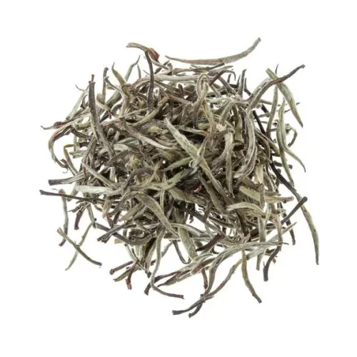

Що таке білий чай?
Білий чай — це найменш оброблений вид чаю. Листя лише підсушують на сонці, що зберігає максимум корисних речовин.
Основні види білого чаю
- Бай Хао Інь Чжень (Срібні Голки): Найдорожчий білий чай, виробляється з ніжних бруньок.
- Бай Му Дань (Білий Піон): Складається з бруньок та листя, має більш насичений смак.
- Шоу Мей: Більш витриманий білий чай з фруктовими нотами.
Як виробляється білий чай?
Процес виробництва:
- Збір: Використовують молоді бруньки та верхні листки.
- Сушіння: Листя підсушують природним способом або в тіні.
- Легка ферментація: Відбувається природним чином під час сушіння.
Як заварювати білий чай?
- Температура води: 75-85°C
- Час заварювання: 3-5 хв.
- Кількість проливів: 3-5
- Для найкращого смаку використовуйте скляний або фарфоровий посуд.
Чим білий чай відрізняється від зеленого?
Білий чай має ніжніший смак і містить менше кофеїну, ніж зелений. Завдяки мінімальній обробці він зберігає більше антиоксидантів.